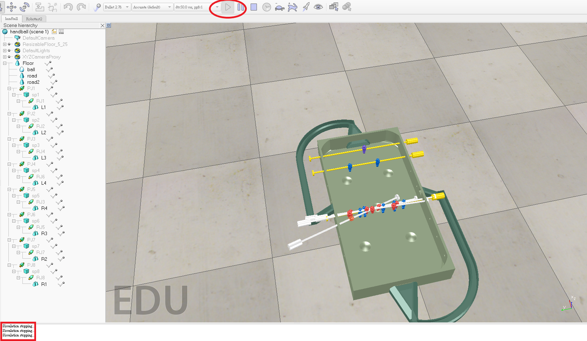
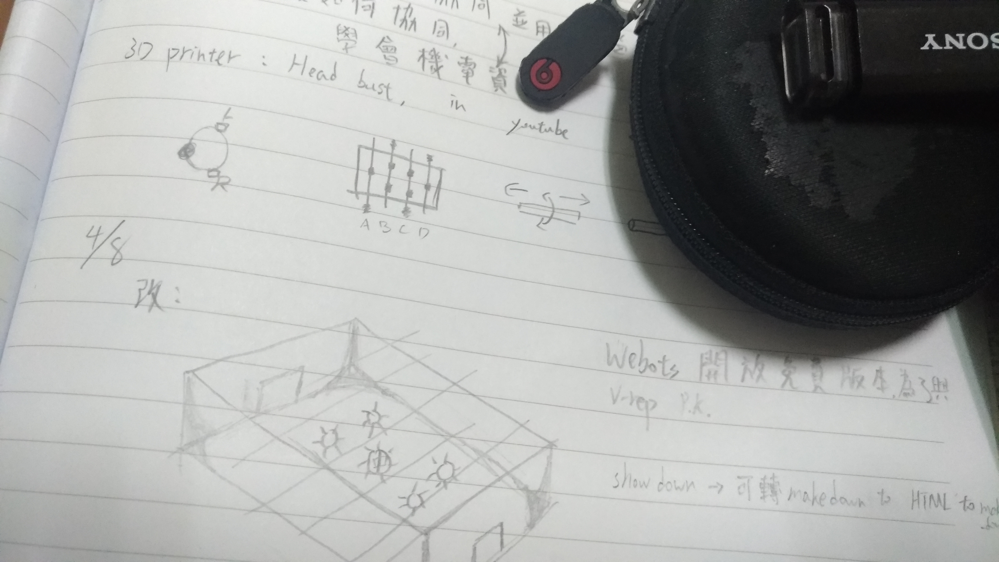

心得 :
下周期中 , 所以正努力讀書 , 這周的進度可能沒有想像多...
改變了一下外觀設計 , 在轉檔完及配置完樹狀圖後若沒有簡化一定卡!!!至少卡了十分鐘有...所以我們要處理的問題又變多了!!!心有餘力不足阿...而且程式的基礎也沒有說很好所以光幾行就看了很久 , 為了在球射門後能發球我選擇畫一個導球的機構讓球回到場上 , 目前只有畫出來還沒加入機構。
還未完成的工作:
| 1 . 電腦操控一支桿件的回擊程式編譯 |
| 2 .電腦操控多支桿件的回擊程式編譯 |
| 3 . 玩家對桿件的切換程式編譯 |
| 4 . 導球機構 |
| 5 . 簡化 |
| 6 . 計分 |
我是這樣想的 : 在球門加上一個sensor然後傳送1的資料至旁邊的記分板並累積分數 , 但只是設想實際上要編譯一定有很多的問題要處理!又是新挑戰阿
下星期的期中分數我打算打80~90分 , 感覺有點高 , 但我付出的也沒有比其他人少。
(死機的樣子...足足卡了十分鐘以上
